基础基础~~~
进程线程
进程
测试环境:Winxp
关于进程，最初始的概念就是提供了程序所能访问的空间，如x86下进程就是4gb虚拟内存空间，进程唯一提供有用的东西就是cr3寄存器，每当进程创建在0环就有一个结构体EPROCESS
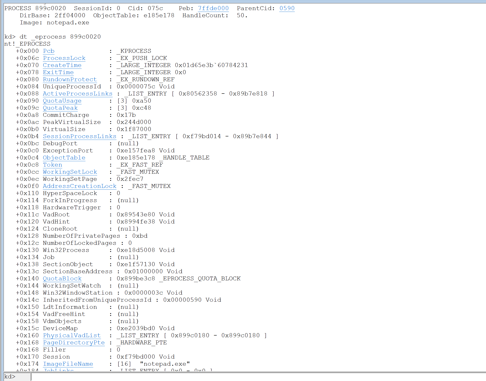
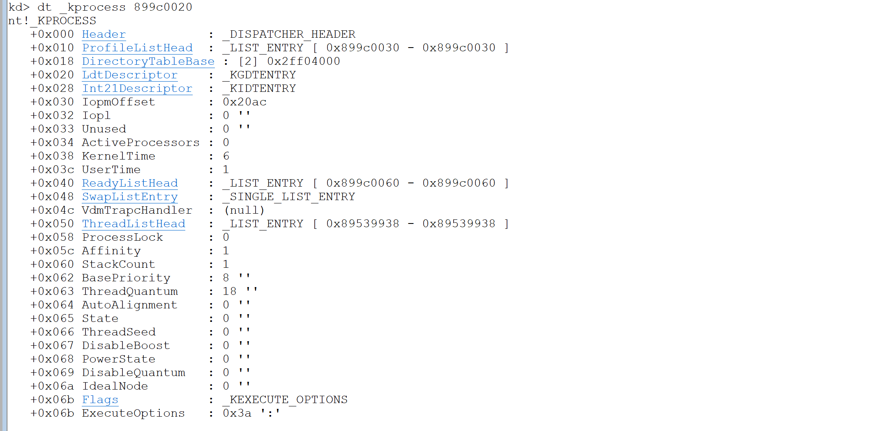
其中第一个成员为KPROCESS
+0x000 Header : _DISPATCHER_HEADER //表示为可等待对象（WaitForSingleObject）
+0x018 DirectoryTableBase : [2] 0x2ff04000 //为页目录表基址
+0x038 KernelTime : 6
+0x03c UserTime : 1 //进程在用户态和内核态所花费的时间
+0x05c Affinity : 1 //规定只能在那几个cpu上跑 转换成二进制即可
+0x062 BasePriority : 8 ‘’ //基础优先级
+0x070 CreateTime : _LARGE_INTEGER 0x01d65e3b`60784231
+0x078 ExitTime : _LARGE_INTEGER 0x0 //进程创建和退出的时间
+0x084 UniqueProcessId : 0x0000075c Void //PID
+0x088 ActiveProcessLinks : _LIST_ENTRY [ 0x80562358 - 0x89b7e818 ] //双向链表 连接的所有活动的进程
//这边可以通过遍历这个双向链表来得到所有活动中的进程，如 dt _eprocess 0x80562358 -88
//也可以通过断链来实现隐藏，当然只能不让某些api找到
+0x11c VadRoot : 0x89543e80 Void //标志了0-2G中哪写内存被使用了
+0x0bc DebugPort : (null) //调试相关
+0x0c4 ObjectTable : 0xe185e178 _HANDLE_TABLE //句柄表
+0x174 ImageFileName : [16] “notepad.exe” //进程镜像文件名 最多16字节
+0x1a0 ActiveThreads : 1 //活动线程的数量
+0x1b0 Peb : 0x7ffde000 _PEB //进程环境块
进程隐藏
1
2
3
4
5
6
7
8
9
10
11
12
13
14
15
16
17
18
19
20
21
22
23
24
25
26
27
28
29
30
31
32
33
34
35
36
37
38
39
40
41
42
43
44
45
46
47
48
49
50
51
52
53
54
55
56
| #include <ntddk.h>
enum WIN10
{
g_uNextProcess = 0x2f0,
g_uPrevProcess = 0x2f8,
g_uImageFileName = 0x450
};
PLIST_ENTRY g_pListEntryTemp = NULL;
PLIST_ENTRY g_pHeadEntry = NULL;
VOID MyDriverUnload(PDRIVER_OBJECT pDriverObject)
{
DbgPrint("unload;");
if(g_pListEntryTemp != NULL)
{
InsertHeadList(g_pHeadEntry, g_pListEntryTemp);
}
}
VOID HideProcessor()
{
PEPROCESS pCurrrentProcess = NULL;
PEPROCESS pPreviousProcess = NULL;
pCurrrentProcess = PsGetCurrentProcess();
pPreviousProcess = (PEPROCESS)(*((PULONG_PTR)((ULONG_PTR)pCurrrentProcess + g_uPrevProcess)) - g_uNextProcess);
while (pCurrrentProcess != pPreviousProcess)
{
if (strcmp(((PCHAR)((ULONG_PTR)pCurrrentProcess + g_uImageFileName)), "temp.exe") == 0)
{
g_pListEntryTemp = (PLIST_ENTRY)(((ULONG_PTR)pCurrrentProcess + g_uNextProcess));
RemoveEntryList(g_pListEntryTemp);
break;
}
pCurrrentProcess = (PEPROCESS)(*((PULONG_PTR)((ULONG_PTR)pCurrrentProcess + g_uNextProcess)) - g_uNextProcess);
}
}
NTSTATUS DriverEntry(PDRIVER_OBJECT pDriverObject, PUNICODE_STRING pStrRegPath)
{
g_pHeadEntry = (PLIST_ENTRY)((ULONG_PTR)PsGetCurrentProcess() + g_uNextProcess);
DbgPrint("start");
__try
{
HideProcessor();
}
__except (EXCEPTION_EXECUTE_HANDLER)
{
DbgPrint("something wrong!");
}
pDriverObject->DriverUnload = MyDriverUnload;
return STATUS_SUCCESS;
}
|
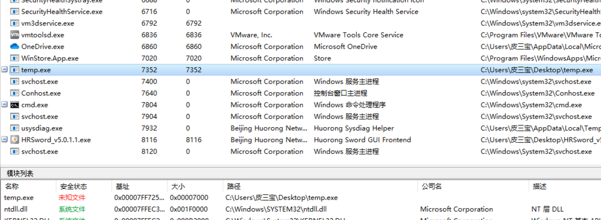
查看id 7352，加载驱动隐藏进程
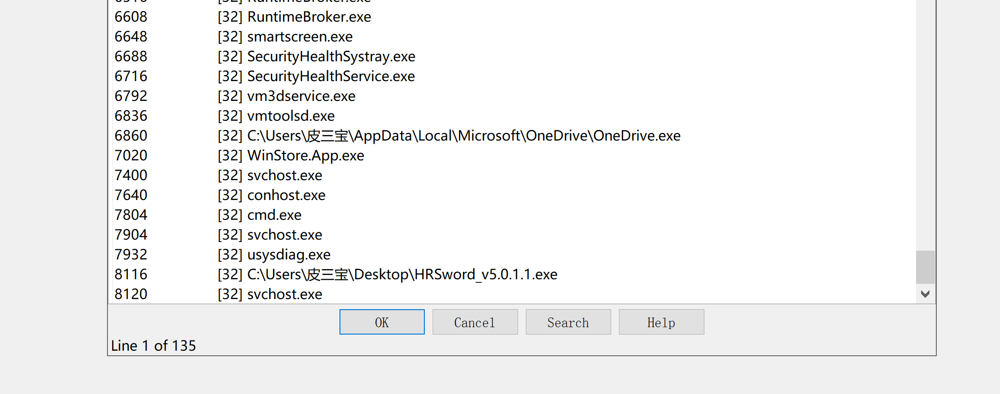
可以发现ida已经无法找到进程，但是火绒剑还是可以，看来是没有使用api
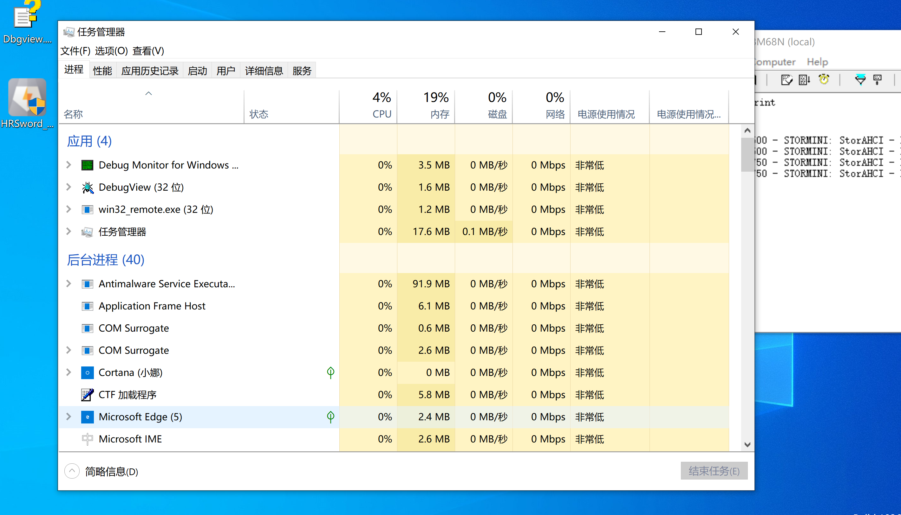
同样的任务管理器也无法找到进程
unload恢复一波
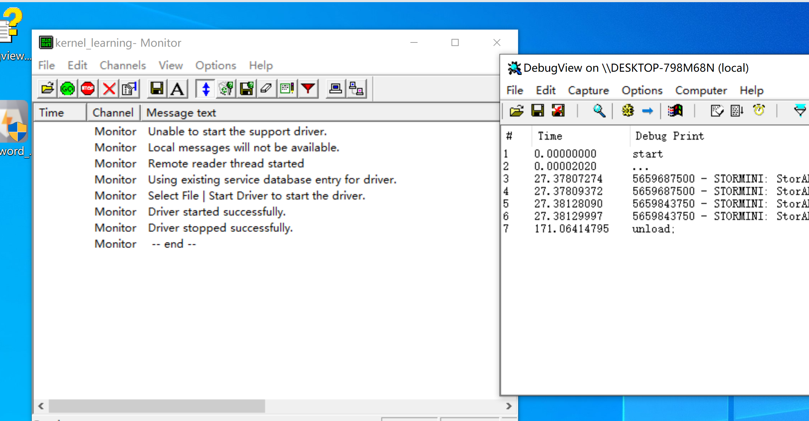
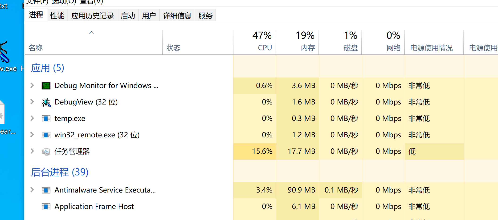
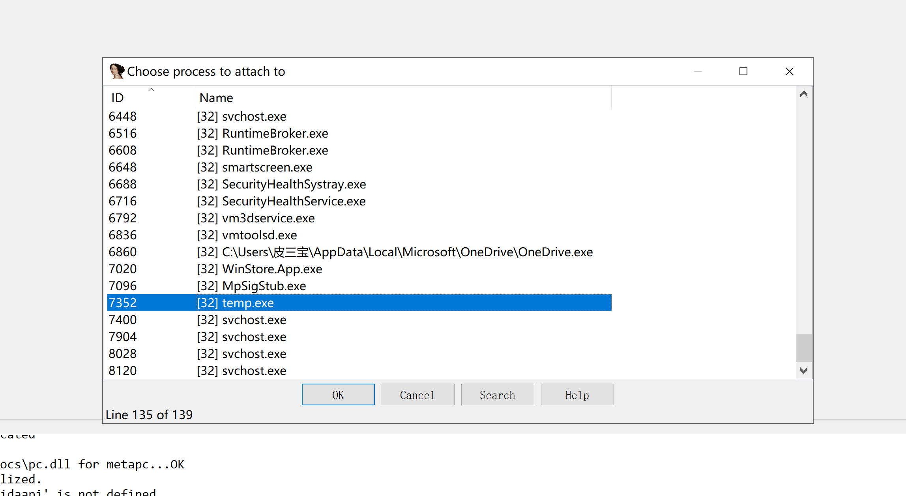
可以发先ida与任务管理器都成功查找到了进程
线程
与进程相对应得是线程得ethread
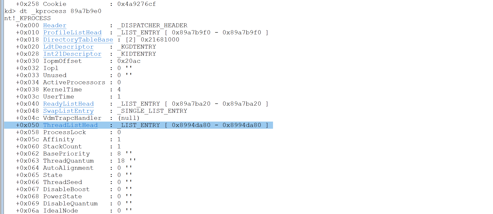
具体查看方法是kprocess得0x50处，可以发现一个双向链表链接了进程内的所有线程
因为我打开的是记事本所以俩个一样只有一个线程
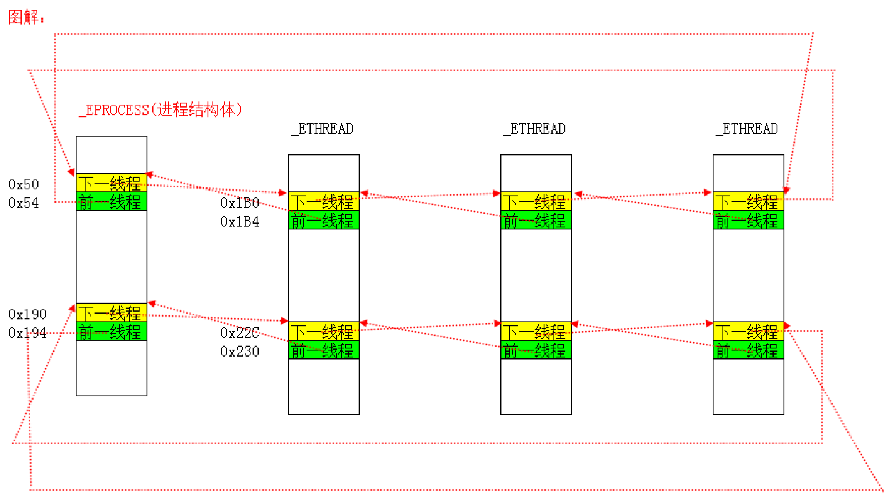
对应的在0x190处还能看到一个副本
分析一波具体结构，首先从kthread开始看起
+0x000 Header : _DISPATCHER_HEADER //和eprocess一模一样，是用来表示是否可等待
+0x010 MutantListHead : _LIST_ENTRY [ 0x5ae36ce0 - 0xeb2f81a ]
+0x018 InitialStack : 0x8994da98 Void
+0x01c StackLimit : 0x8994da98 Void //与线程切换相关
+0x020 Teb : (null) //线程环境块，在三环时就是fs:[0]，在0环时fs指向的KPCR
+0x02c DebugActive : 0xe8 ‘’ //如果值为-1 则表示不能使用调试寄存器
+0x034 ApcState : _KAPC_STATE
+0x0e8 ApcQueueLock : 0
+0x138 ApcStatePointer : [2] (null)
+0x14c SavedApcState : _KAPC_STATE //这边是与APC相关的应用
+0x02d State : 0x98 ‘’ //线程运行状态
+0x06c BasePriority : 0 ‘’ //基础优先值
+0x070 WaitBlock : [4] _KWAIT_BLOCK //表示等待哪个对象中
+0x0e0 ServiceTable : 0x8994db30 Void //指向了系统服务表的基地址
+0x134 TrapFrame : 0xe380d1f0 _KTRAP_FRAME //保存现场环境
+0x140 PreviousMode : 0 ‘’ //表示先前模式是0环还是3环
+0x1ec Cid : _CLIENT_ID //表示进程和线程id
+0x220 ThreadsProcess : 0x89a86240 _EPROCESS //指向自己所属的进程
+0x22c ThreadListEntry : _LIST_ENTRY [ 0x0 - 0x0 ] //所有线程得位置
KPCR
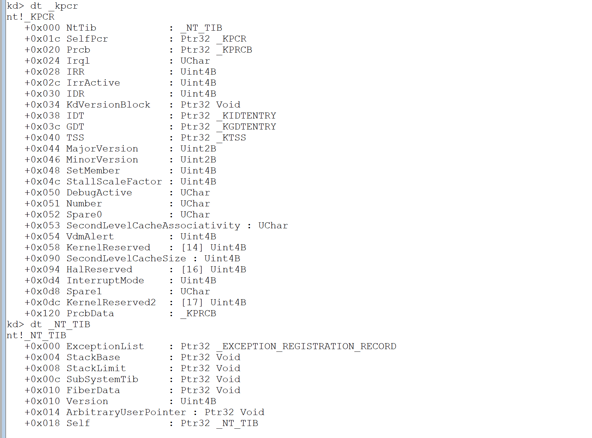
+0x000 ExceptionList : Ptr32 _EXCEPTION_REGISTRATION_RECORD //异常处理链表
+0x004 StackBase : Ptr32 Void
+0x008 StackLimit : Ptr32 Void //当前线程内核栈的基地址和大小
+0x018 Self : Ptr32 _NT_TIB //指向自己
+0x01c SelfPcr : Ptr32 _KPCR //同上
+0x020 Prcb : Ptr32 _KPRCB //指向扩展结构体
+0x038 IDT : Ptr32 _KIDTENTRY //指向IDT表基地址
+0x03c GDT : Ptr32 _KGDTENTRY//GDT表基地址
+0x040 TSS : Ptr32 _KTSS //指向TSS任务段
+0x051 Number : UChar //CPU编号
+0x120 PrcbData : _KPRCB //指向扩展结构体
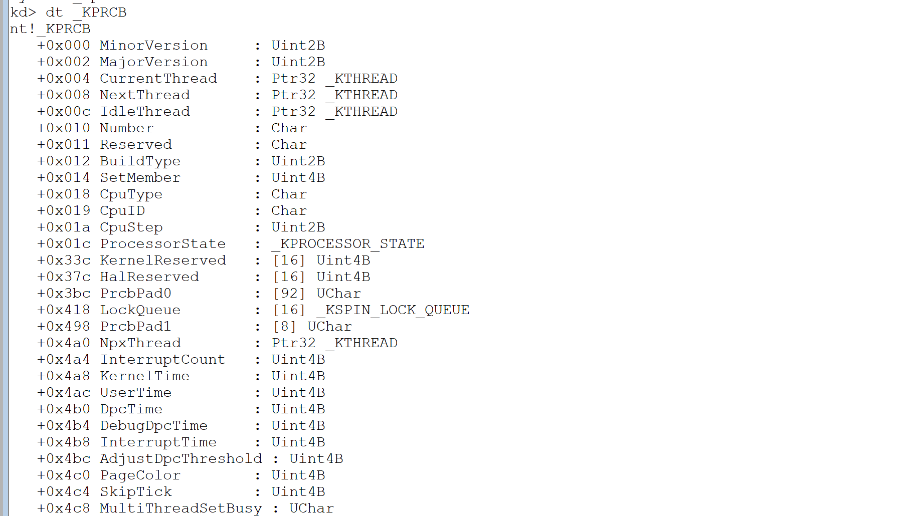
查看_KPRCB结构体
+0x004 CurrentThread : Ptr32 _KTHREAD //当前线程
+0x008 NextThread : Ptr32 _KTHREAD //即将切换线程
+0x00c IdleThread : Ptr32 _KTHREAD //空闲线程
等待链表-调度链表
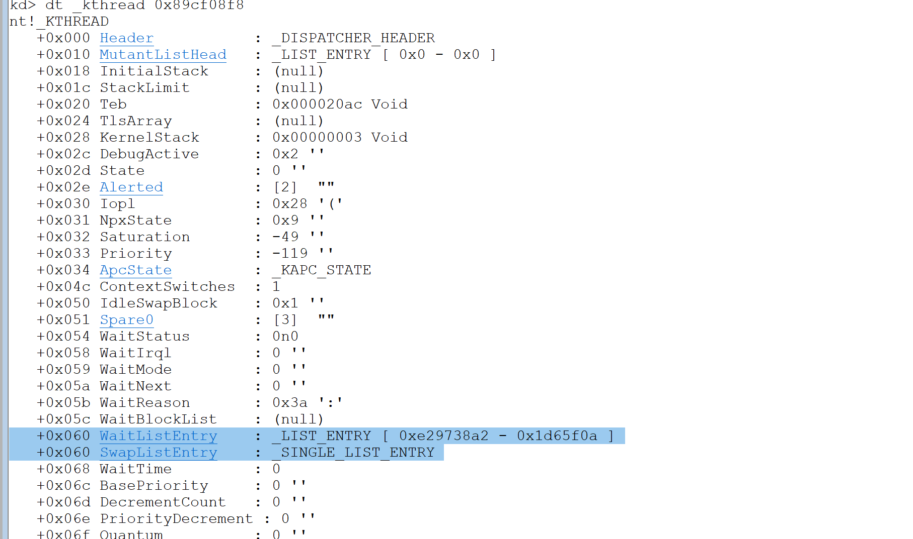
主要是kthread +0x60处 //等待链表是当线程调用了Sleep() 或者 WaitForSingleObject()等函数时，就挂到这个链表
调度链表有32个圈，就是优先级:0 - 31 0最低 31最高 默认优先级一般是8
改变优先级就是从一个圈里面卸下来挂到另外一个圈上
这32个圈是正在调度中的线程：包括正在运行的和准备运行的
比如：只有一个CPU但有10个线程在运行，那么某一时刻，正在运行的线程在KPCR中，其他9个在这32个圈中。
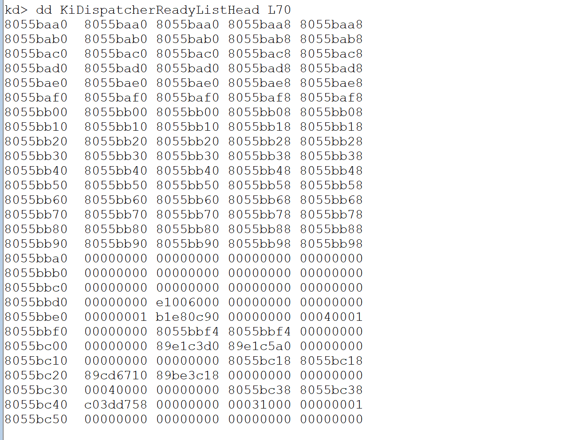
查看一波调度链表
XP只有一个33个圈，也就是说上面这个数组只有一个，多核也只有一个.
Win7也是一样的只有一个圈，如果是64位的，那就有64个圈.
服务器版本：KiWaitListHead整个系统只有一个，但KiDispatcherReadyListHead这个数组有几个CPU就有几组
模拟线程切换
1
2
3
4
5
6
7
8
9
10
11
12
13
14
15
16
17
18
19
20
21
22
23
24
25
26
27
28
29
30
31
32
33
34
35
36
37
38
39
40
41
42
43
44
45
46
47
48
49
50
51
52
53
54
55
56
57
58
59
60
61
62
63
64
65
66
67
68
69
70
71
72
73
74
75
76
77
78
79
80
81
82
83
84
85
86
87
88
89
90
91
92
93
94
95
96
97
98
99
100
101
102
103
104
105
106
107
108
109
110
111
112
113
114
115
116
117
118
119
120
121
122
123
124
125
126
127
128
129
130
131
132
133
134
135
136
137
138
139
140
141
142
143
144
145
146
147
148
149
150
151
152
153
154
155
156
157
158
159
160
161
162
163
164
165
166
167
168
169
170
171
172
173
174
175
176
177
178
179
180
181
182
183
184
185
186
187
188
189
190
191
192
193
194
195
196
197
198
199
200
201
202
203
204
205
206
207
208
209
210
211
212
213
214
215
216
217
218
219
220
221
222
223
224
225
226
227
228
229
230
231
232
233
234
235
236
237
238
239
240
241
242
243
244
245
246
247
248
249
250
251
252
253
254
255
256
257
258
259
260
261
262
263
264
265
266
267
268
269
270
271
272
273
274
275
276
| #define _CRT_SECURE_NO_DEPRECATE
#include <stdio.h>
#include <windows.h>
#define MAXGMTHREAD 100
typedef struct
{
char* name;
int Flags;
int SleepMillsecondDot;
void* initialStack;
void* StackLimit;
void* KernelStack;
void* lpParameter;
void(*func)(void* lpParameter);
}GMThread_t;
void GMThreadStartup(GMThread_t* GMThreadp);
void IdleGMThread(void* lpParameter);
void PushStack(unsigned int** Stackpp, unsigned int v);
void initGMThread(GMThread_t* GMThreadp, char* name, void(*func)(void* lpParameter), void* lpParameter);
int RegisterGMThread(char* name, void(*func)(void* lpParameter), void* lpParameter);
void SwitchContext(GMThread_t* SrcGMThreadp, GMThread_t* DstGMThreadp);
void Scheduling();
void GMSleep(int MilliSeconds);
void Thread1(void*);
void Thread2(void*);
void Thread3(void*);
void Thread4(void*);
#define GMTHREADSTACKSIZE 0x80000
int CurrentThreadIndex = 0;
GMThread_t GMThreadList[MAXGMTHREAD] = { NULL, 0 };
enum FLAGS
{
GMTHREAD_CREATE = 0x1,
GMTHREAD_READY = 0x2,
GMTHREAD_SLEEP = 0x4,
GMTHREAD_EXIT = 0x8,
};
int main()
{
RegisterGMThread((char*)"Thread1", Thread1, NULL);
RegisterGMThread((char*)"Thread2", Thread2, NULL);
RegisterGMThread((char*)"Thread3", Thread3, NULL);
RegisterGMThread((char*)"Thread4", Thread4, NULL);
for (;;)
{
Sleep(20);
Scheduling();
}
return 0;
}
void GMThreadStartup(GMThread_t* GMThreadp)
{
GMThreadp->func(GMThreadp->lpParameter);
GMThreadp->Flags = GMTHREAD_EXIT;
Scheduling();
return;
}
void IdleGMThread(void* lpParameter)
{
printf("IdleGMThread---------------\n");
Scheduling();
return;
}
void PushStack(unsigned int** Stackpp, unsigned int v)
{
*Stackpp -= 1;
**Stackpp = v;
return;
}
void initGMThread(GMThread_t* GMThreadp, char* name, void(*func)(void* lpParameter), void* lpParameter)
{
unsigned char* StackPages;
unsigned int* StackDWordParam;
GMThreadp->Flags = GMTHREAD_CREATE;
GMThreadp->name = name;
GMThreadp->func = func;
GMThreadp->lpParameter = lpParameter;
StackPages = (unsigned char*)VirtualAlloc(NULL, GMTHREADSTACKSIZE, MEM_COMMIT, PAGE_READWRITE);
ZeroMemory(StackPages, GMTHREADSTACKSIZE);
GMThreadp->initialStack = StackPages + GMTHREADSTACKSIZE;
GMThreadp->StackLimit = StackPages;
StackDWordParam = (unsigned int*)GMThreadp->initialStack;
PushStack(&StackDWordParam, (unsigned int)GMThreadp);
PushStack(&StackDWordParam, (unsigned int)9);
PushStack(&StackDWordParam, (unsigned int)GMThreadStartup);
PushStack(&StackDWordParam, (unsigned int)5);
PushStack(&StackDWordParam, (unsigned int)7);
PushStack(&StackDWordParam, (unsigned int)6);
PushStack(&StackDWordParam, (unsigned int)3);
PushStack(&StackDWordParam, (unsigned int)2);
PushStack(&StackDWordParam, (unsigned int)1);
PushStack(&StackDWordParam, (unsigned int)0);
GMThreadp->KernelStack = StackDWordParam;
GMThreadp->Flags = GMTHREAD_READY;
return;
}
int RegisterGMThread(char* name, void(*func)(void* lpParameter), void* lpParameter)
{
int i;
for (i = 1; GMThreadList[i].name; i++)
{
if (0 == _stricmp(GMThreadList[i].name, name))
{
break;
}
}
initGMThread(&GMThreadList[i], name, func, lpParameter);
return (i & 0x55AA0000);
}
__declspec(naked) void SwitchContext(GMThread_t* SrcGMThreadp, GMThread_t* DstGMThreadp)
{
__asm
{
push ebp
mov ebp, esp
push edi
push esi
push ebx
push ecx
push edx
push eax
mov esi, SrcGMThreadp
mov edi, DstGMThreadp
mov[esi + GMThread_t.KernelStack], esp
mov esp, [edi + GMThread_t.KernelStack]
pop eax
pop edx
pop ecx
pop ebx
pop esi
pop edi
pop ebp
ret
}
}
void Scheduling()
{
int TickCount = GetTickCount();
GMThread_t* SrcGMThreadp = &GMThreadList[CurrentThreadIndex];
GMThread_t* DstGMThreadp = &GMThreadList[0];
for (int i = 1; GMThreadList[i].name; i++)
{
if (GMThreadList[i].Flags & GMTHREAD_SLEEP)
{
if (TickCount > GMThreadList[i].SleepMillsecondDot)
{
GMThreadList[i].Flags = GMTHREAD_READY;
}
}
if (GMThreadList[i].Flags & GMTHREAD_READY)
{
DstGMThreadp = &GMThreadList[i];
break;
}
}
CurrentThreadIndex = DstGMThreadp - GMThreadList;
SwitchContext(SrcGMThreadp, DstGMThreadp);
return;
}
void GMSleep(int MilliSeconds)
{
GMThread_t* GMThreadp;
GMThreadp = &GMThreadList[CurrentThreadIndex];
if (GMThreadp->Flags != 0)
{
GMThreadp->Flags = GMTHREAD_SLEEP;
GMThreadp->SleepMillsecondDot = GetTickCount() + MilliSeconds;
}
Scheduling();
return;
}
void Thread1(void*)
{
while (1)
{
printf("Thread1\n");
GMSleep(500);
}
}
void Thread2(void*)
{
while (1)
{
printf("Thread2\n");
GMSleep(200);
}
}
void Thread3(void*)
{
while (1)
{
printf("Thread3\n");
GMSleep(10);
}
}
void Thread4(void*)
{
while (1)
{
printf("Thread4\n");
GMSleep(1000);
}
}
|
代码是于海东老师的，直接拿过来编译即可使用，主要是逆向的过程
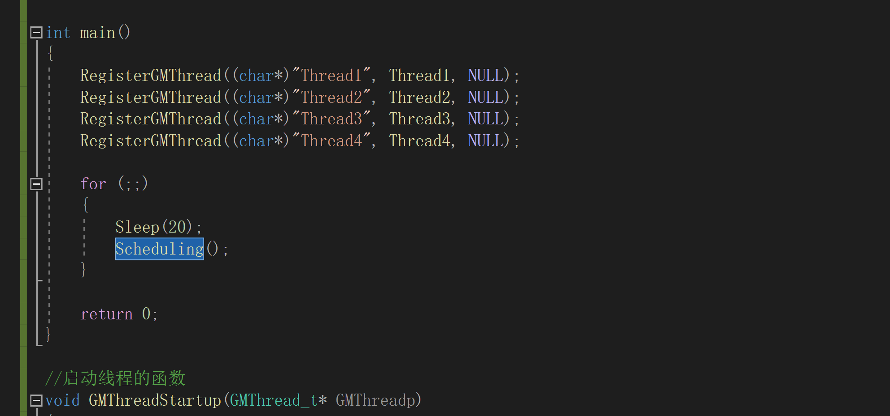
前面函数单纯负责注册线程，真正切换线程在Scheduling函数中
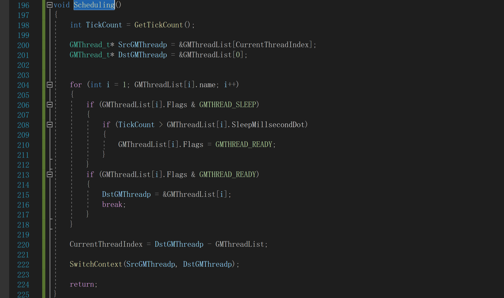
判断状态，然后当前线程主动call SwitchContext来让出cpu
具体切换过程就在SwitchContext中
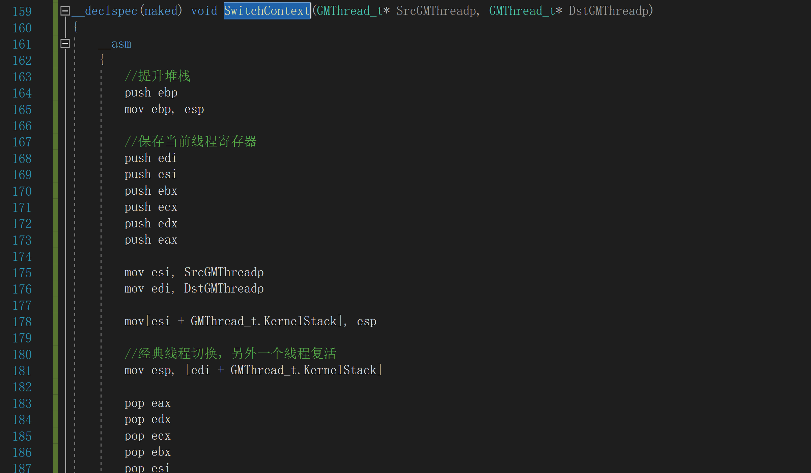
保存现场环境，然后堆栈切换后恢复环境
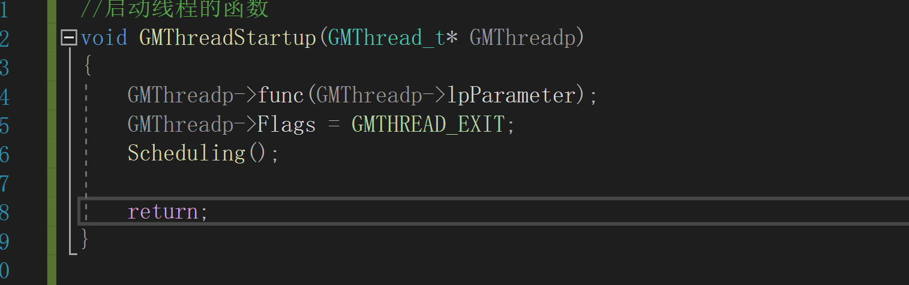
返回时会回到GMThreadStartup，这边call了线程处理函数
函数call完后设置一波状态然后继续判断
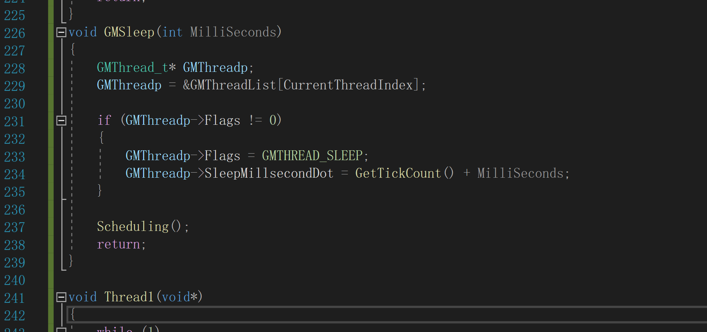
KiSwapContext
来逆向一波内核函数，总体和上面模拟线程切换差不多
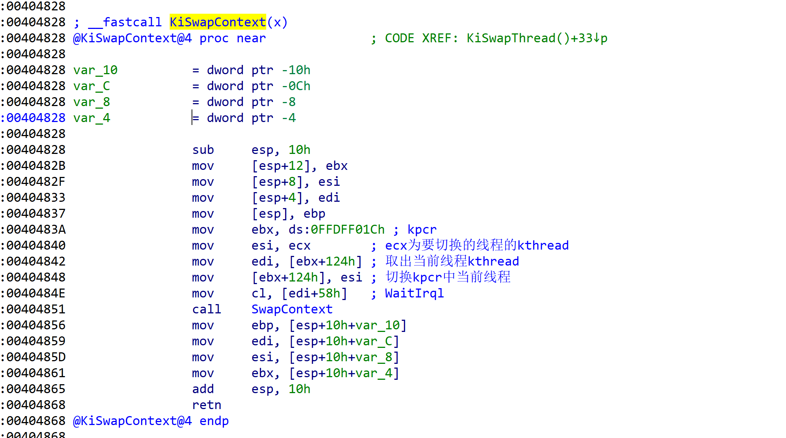
来看看swapcontext
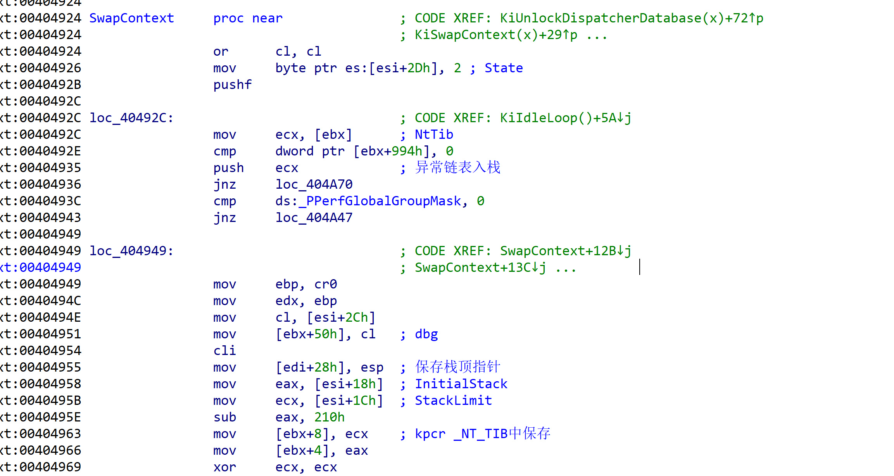
总结一波线程切换知识
1.api调用//绝大部分api调用时都会判断是否要线程切换
2.时钟中断
3.异常
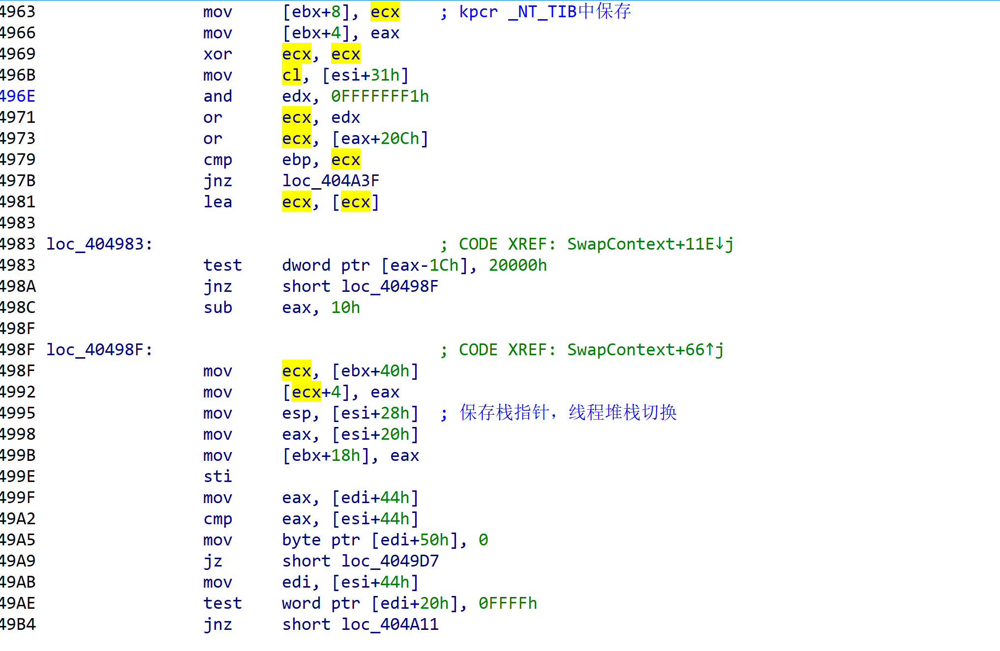
这边还能看到tss的esp0
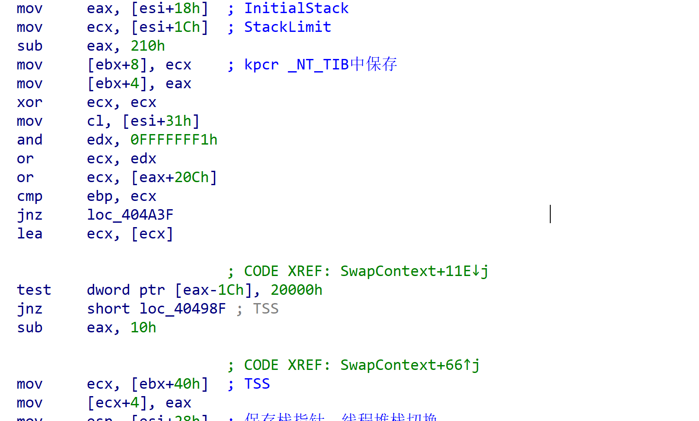
具体如上图，eax是InitialStack
-0x210 -0x10后保存在tss中
这是因为内核堆栈结构所导致，0x210存放浮点寄存器值，然后紧跟着trap frame
可以看之前的笔记，trapframe一开始4个4字节是给虚拟8086用的所以是0x10
这就是为啥tss中esp0永远是当前线程的esp0
后面还往tss中存放cr3
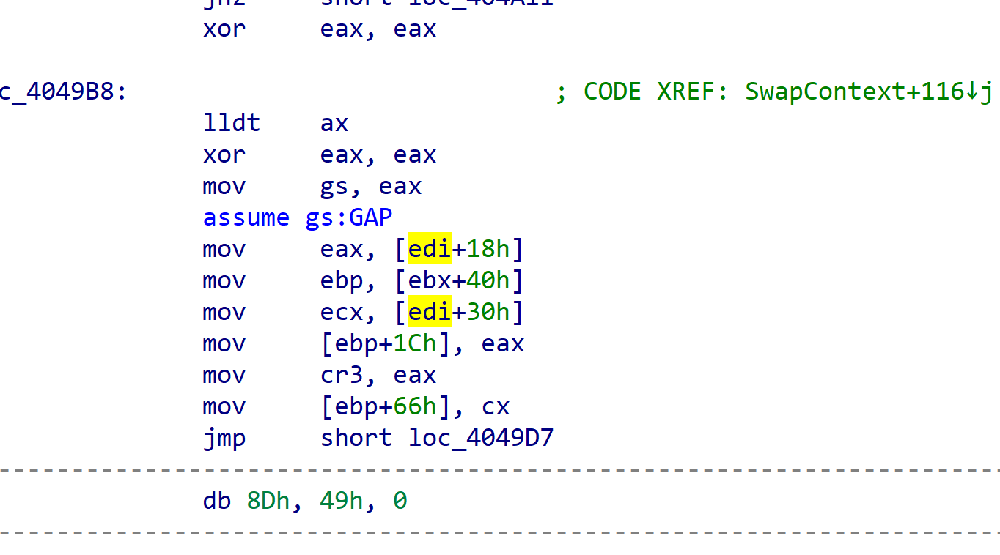
edi是kprocess
+18就是cr3了放到tss中然后切换cr3
继续往下看
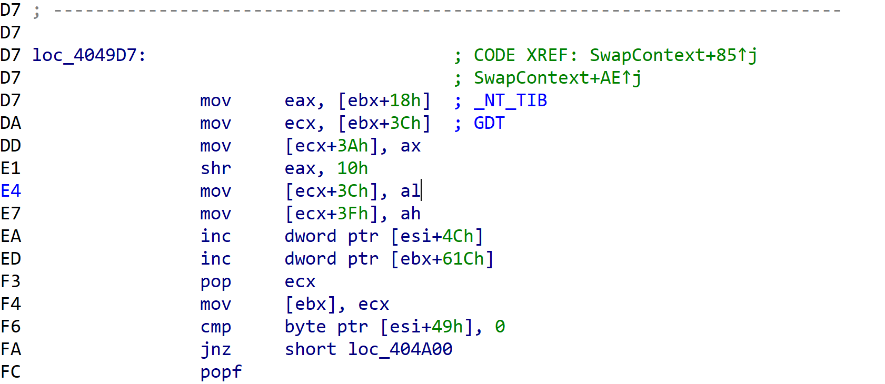
可以看到这个TEB相关
这也解释了为什么不管是什么线程fs都一样，他会把当前线程peb放到gdt表中，具体可以看之前段描述符结构，发现正好是吧地址填满了base addr
现在回去看一波线程优先级
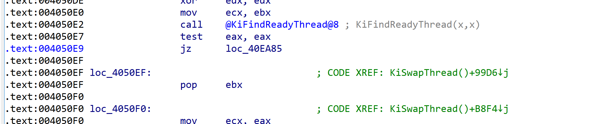
KiFindReadyThread后比较返回值是否为空，KiFindReadyThread其实就是遍历32个链表来根据优先级查找
如果链表为空那么开始跑idlethread
查看跳转处
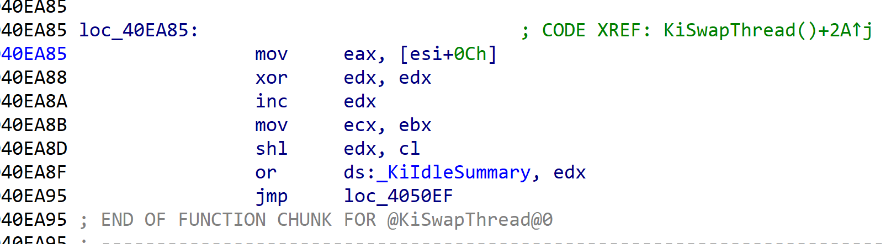
取出idlethread放到eax中然后跳转
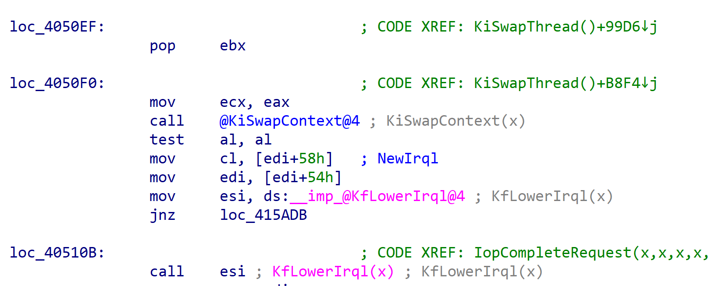
这边_KiIdleSummary是个dword每个位用来表示每个优先级的链表是否为空
windbg查看一波链表
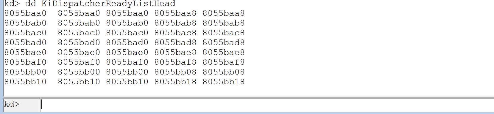